前庭系統定位：中樞 vs 周邊、矛盾性前庭症候群、Horner 路徑
官方題目：顛倒的世界：前庭疾病的診斷與挑戰——前庭疾病定位與處置的臨床導航圖
主講：洪亘屏（S. Hong）｜2026 年 11 月 1 日 09:00–10:30｜FASAVA 2026 F 廳（全英文）｜場次 01
目前是現場照片版，已整理約 40 張投影片照片，還沒有講義和錄音。標 💡 的是整理者依教科書補充的內容，之後會對照講者的說法。
⭐ 必記原則
- 有本體感覺缺損、輕癱、小腦症狀：想到中樞前庭
- 一般前庭病灶：頭傾斜、身體傾倒朝向病灶側
- 例外是矛盾性前庭症候群：頭傾斜遠離病灶
- 矛盾性的病灶在小葉小結葉或後小腦腳（CCP）
- 矛盾性時，本體感覺缺損在病灶同側：用它來定位，不要看頭歪哪邊
- 休息時眼球震顫 >66 次／分 偏向周邊（敏感度 85%、特異度 95%）
- NE 定位在周邊的狗，約 1/4 MRI 有中樞病灶：周邊定位不能排除中樞
- 遮一眼、另一眼用筆燈照：眼球震顫變明顯支持周邊（周邊 7/21，中樞 1/16）
- 用發病與進展對照病程曲線排鑑別診斷：持續惡化想腫瘤
- 中耳炎可延伸成耳源性腦膜腦炎；常伴 CN VII、Horner，常留頭傾斜
- 法鬥：耳咽管引流差，容易有無症狀中耳積液 → 耳源性腦膜炎；NE 定位常不準
- 貓耳源性顱內感染：63% 沒耳病史、47% 耳鏡正常；常見 Pasteurella
- 手術（VBO／TECA-LBO）＋抗生素預後最好；經驗用藥 Clavamox ＋ clindamycin
- 特發性前庭疾病：老年、急性、沒有 Horner、1–2 週自行改善（但約一半會殘留症狀）
- 中樞：急性不進展想血管性，進展想腫瘤，慢性想發炎；飲食史別漏掉硫胺素缺乏
- Horner：瞳孔縮小、眼瞼下垂、眼球內陷、第三眼瞼突出
- Horner 是三段神經元：下視丘 → T1–T3 → 前頸神經節 → 眼
- 節後纖維會經過中耳：中耳炎可同時造成前庭症狀和 Horner
場次資訊
▾- 官方題目：顛倒的世界：前庭疾病的診斷與挑戰——前庭疾病定位與處置的臨床導航圖。
- 講者：洪亘屏（S. Hong）；2026-11-01 09:00–10:30，F 廳，全英文授課。同一位講者接著講 02 全身無力與下運動神經元疾病。
- 投影片順序依拍攝順序整理，實際上課順序可能不同。
📸 現場 神經（前庭）病患的看診流程
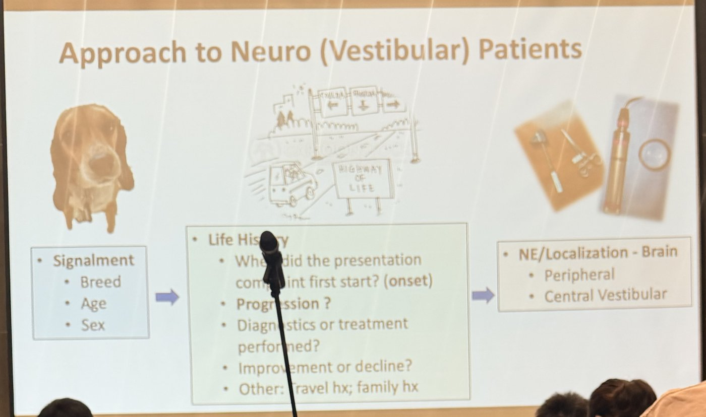
| 1. 基本資料 | 2. 病史 | 3. 神經學檢查／定位 |
|---|---|---|
| 品種、年齡、性別 | 症狀何時開始（發病）？ 進展如何？ 做過哪些檢查或治療？ 改善還是惡化？ 其他：旅遊史、家族史 |
腦：周邊還是中樞前庭 |
1. 中樞 vs 周邊前庭：步態與姿勢
▾📸 現場 Clinical Signs – Gait/Posture
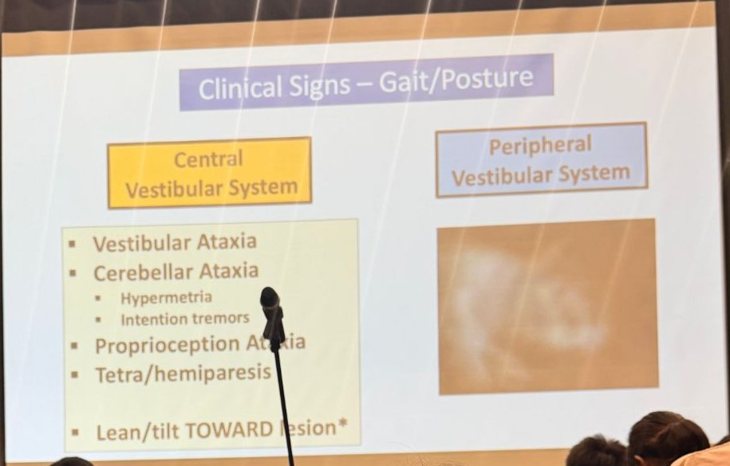
中樞前庭系統（投影片列出的症狀）
- 前庭性運動失調（vestibular ataxia）
- 小腦性運動失調（cerebellar ataxia）：步幅過大（hypermetria）、意向性震顫（intention tremor）
- 本體感覺性運動失調（proprioceptive ataxia）
- 四肢輕癱或半側輕癱（tetra/hemiparesis）
- 身體傾倒、頭傾斜朝向病灶，投影片加了 *，指的就是第 3 節的例外：矛盾性前庭症候群
💡 周邊那一側是現場影片，照片看不出內容。一般的對照如下：
| 症狀 | 周邊（內耳、CN VIII） | 中樞（腦幹前庭核、小腦） |
|---|---|---|
| 頭傾斜 | 朝向病灶 | 多半朝向病灶；矛盾性則遠離病灶 |
| 本體感覺缺損、輕癱 | 沒有 | 常有（病灶同側） |
| 意識 | 正常（可能因暈眩而不安） | 可能沉鬱、昏睡 |
| 病理性眼球震顫 | 水平或旋轉，快相遠離病灶，不隨頭位改變方向 | 可以是任何方向，包括垂直；可能隨頭位改變方向 |
| 其他腦神經 | 可能有 CN VII 麻痺、Horner（中耳炎） | 可能有 CN V–XII 多條腦神經缺損 |
2. 研究：神經學檢查定位有多準
▾📸 現場 Troxel 2005：中樞 vs 周邊前庭疾病的神經學症狀
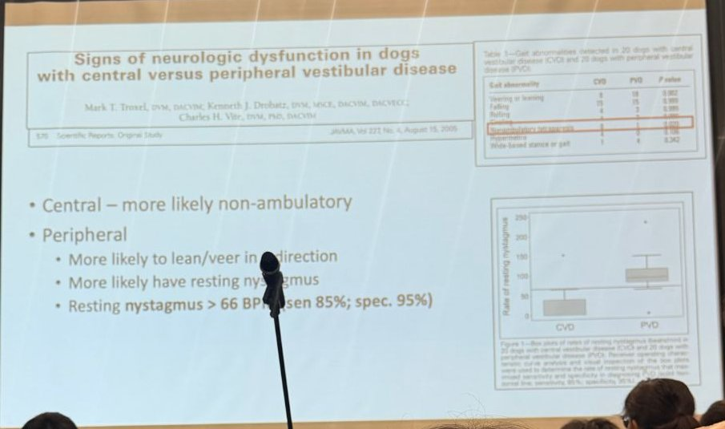
- 中樞前庭疾病（CVD）20 隻 vs 周邊前庭疾病（PVD）20 隻狗。
- 中樞：比較可能無法行走（non-ambulatory，表中紅框的四肢輕癱）。
- 周邊：
- 比較可能往一個方向傾倒或偏走（lean/veer）。
- 比較可能有休息時眼球震顫（resting nystagmus）。
- 休息時眼球震顫 > 66 次／分：診斷周邊的敏感度 85%、特異度 95%。
💡 實用做法：看到眼球震顫時數 15 秒再乘 4。很快（>66 次／分）偏向周邊；慢的或沒有休息時眼球震顫，加上無法行走，要提高中樞的懷疑。
📸 現場 Bongartz 2020：神經學檢查定位 vs MRI
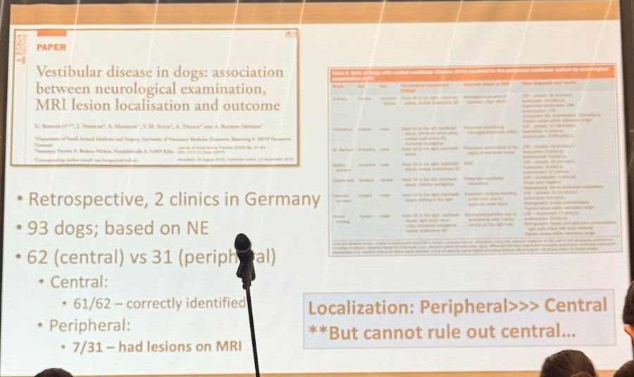
- 回溯性研究，德國 2 家醫院，93 隻狗，依神經學檢查（NE）分組：中樞 62 隻、周邊 31 隻。
- 中樞：62 隻中 61 隻定位正確。
- 周邊：31 隻中 7 隻（約 23%）MRI 上其實有中樞病灶。
- 投影片結論："Localization: Peripheral >>> Central — But cannot rule out central…"
📸 現場 改良式筆燈遮眼試驗（Modified Penlight-Cover Test）
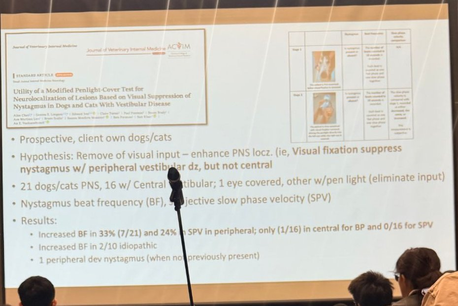
- 前瞻性研究，客戶的狗和貓。
- 假說：去除視覺輸入可以幫助周邊定位，因為視覺固視會抑制周邊前庭疾病的眼球震顫，但不會抑制中樞的。
- 周邊 21 隻、中樞 16 隻；做法是一眼遮住，另一眼用筆燈直照（讓動物無法固視）。
- 比較眼球震顫的頻率（beat frequency，BF）和主觀的慢相速度（slow phase velocity，SPV）。
- 結果：
- 周邊：BF 上升 33%（7/21），SPV 上升 24%。
- 中樞：BF 上升只有 1/16，SPV 上升 0/16。
- 特發性前庭疾病：BF 上升 2/10。
- 1 隻周邊病例原本沒有眼球震顫，遮眼加筆燈後才出現。
3. 矛盾性前庭症候群（Paradoxical Vestibular Syndrome）
▾📸 現場 病灶位置與前庭脊髓徑
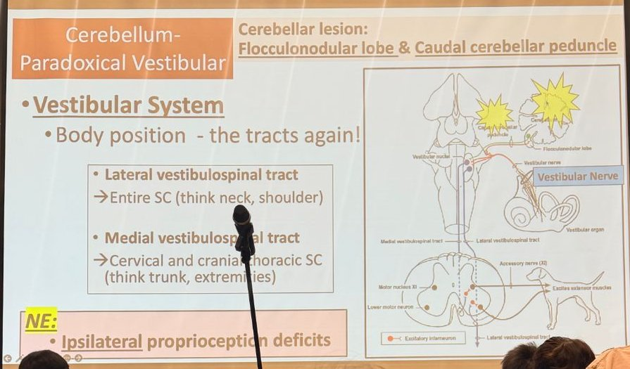
- 小腦病灶：小葉小結葉（flocculonodular lobe）與後小腦腳（caudal cerebellar peduncle，CCP）。
- 前庭系統負責身體姿勢，又回到傳導徑（"the tracts again!"）：
- 外側前庭脊髓徑（lateral vestibulospinal tract）→ 整條脊髓（投影片寫：想成頸部、肩部）
- 內側前庭脊髓徑（medial vestibulospinal tract）→ 頸髓與前胸髓（投影片寫：想成軀幹、四肢）
- 神經學檢查（NE）：本體感覺缺損在病灶同側（ipsilateral proprioception deficits）。
📸 現場 迴路圖：以左側小腦病灶為例
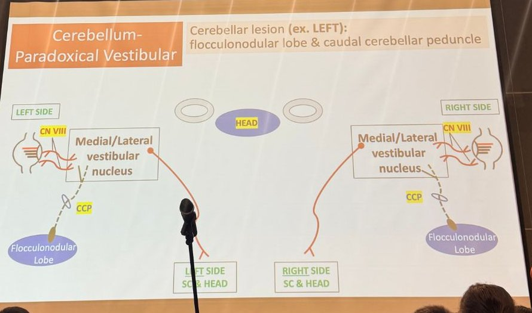
圖上的結構，左右兩邊對稱：
- CN VIII（前庭神經）→ 內側／外側前庭核 → 往下到同側脊髓與頭部（LEFT SIDE SC & HEAD／RIGHT SIDE SC & HEAD）。
- 小葉小結葉經 CCP（虛線，抑制性）回到同側前庭核。
💡 機轉（以左側病灶為例）：
- 正常時，小葉小結葉經 CCP 抑制同側前庭核。
- 左側小葉小結葉或左 CCP 壞掉 → 左側前庭核失去抑制，活性比右側高。
- 大腦把「左邊訊號比較強」解讀成身體往右倒，於是代償往左撐；結果頭傾斜、身體傾倒朝向右邊，也就是遠離病灶。這和一般前庭病灶（訊號減弱的一側＝病灶側＝頭歪的一側）剛好相反。
- 但小腦和腦幹的本體感覺路徑受損仍在左側，所以本體感覺缺損、輕癱出現在左邊。
💡 常見病因：後顱窩腫瘤（如脈絡叢腫瘤、腦膜瘤）、腦梗塞、肉芽腫性腦膜腦炎（GME）、甲硝唑（metronidazole）中毒等。
📸 現場 Villalonga 2026：小腦病灶位置與臨床表現
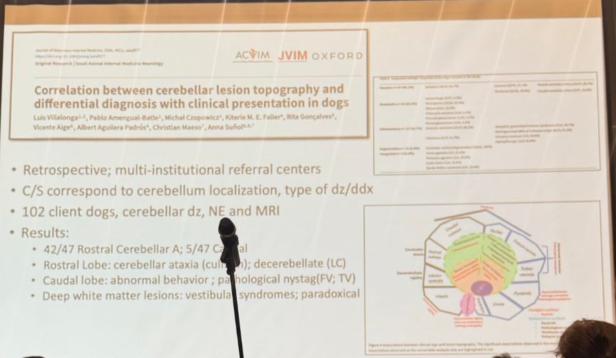
- 回溯性、多家轉診中心；102 隻有小腦疾病、做過神經學檢查和 MRI 的狗。
- 問題：臨床症狀能不能對應到小腦的哪一區，以及疾病種類和鑑別診斷？
- 結果：
- 血管性病灶 47 隻中，42 隻在前小腦動脈（rostral cerebellar artery）分布區，5 隻在後小腦動脈區。
- 前葉（rostral lobe）：小腦性運動失調（山頂 culmen）；去小腦姿勢（decerebellate，中央小葉 LC）。
- 後葉（caudal lobe）：行為異常；病理性眼球震顫（蚓葉 FV、蚓結節 TV）。
- 深部白質病灶：前庭症候群；矛盾性前庭症候群。
💡 「42/47 Rostral Cerebellar A」是依投影片右上表（血管性 n=47）推測為前小腦動脈，之後對照原文確認。FV、TV、LC 的縮寫也是整理者依小腦分區圖推測。
4. 病例 Jack（矛盾性前庭）
▾📸 現場 病史
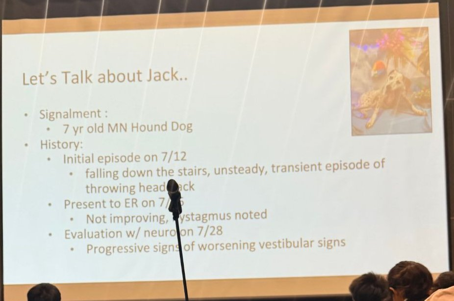
- Jack，7 歲已去勢公犬，獵犬（Hound）。
- 7/12 第一次發作：從樓梯跌下、站不穩，短暫出現頭往後仰。
- 7 月中下旬到急診（日期被麥克風擋住）：沒有改善，發現眼球震顫。
- 7/28 神經科評估：前庭症狀持續惡化。
💡 「進行性惡化」是重點：特發性前庭疾病通常幾天內開始改善，持續惡化要往中樞、腫瘤方向想（見第 5 節的病程曲線）。
📸 現場 神經學定位與鑑別診斷
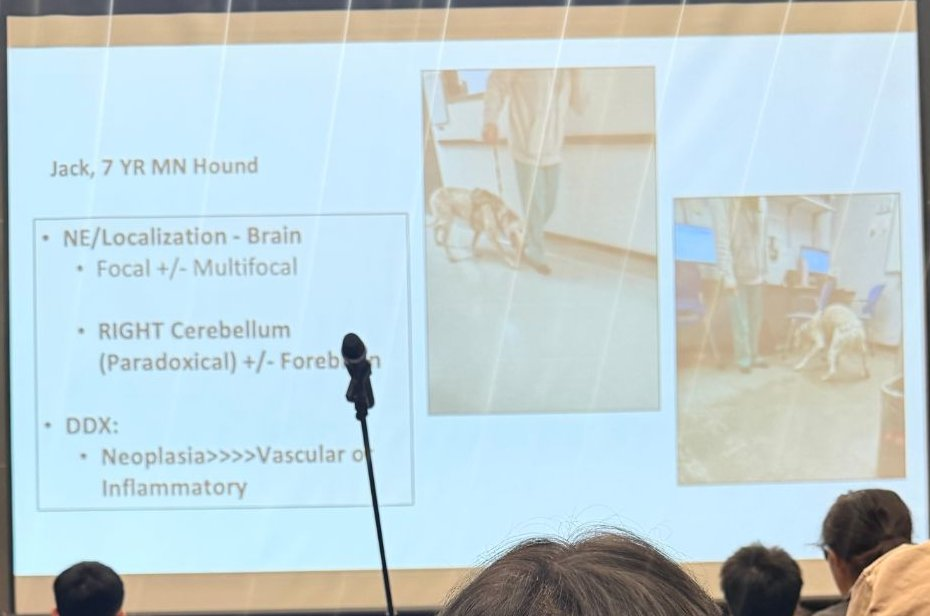
- 神經學定位：腦，局部 ± 多發。
- 右側小腦（矛盾性） ± 前腦。
- 鑑別診斷：腫瘤 >>>> 血管性或發炎。
💡 套用第 3 節的規則：右側小腦病灶 → 頭應該傾向左邊（遠離病灶），本體感覺缺損在右邊。投影片沒寫頭歪哪邊，之後對照錄音確認。
📸 現場 影像與暫定診斷
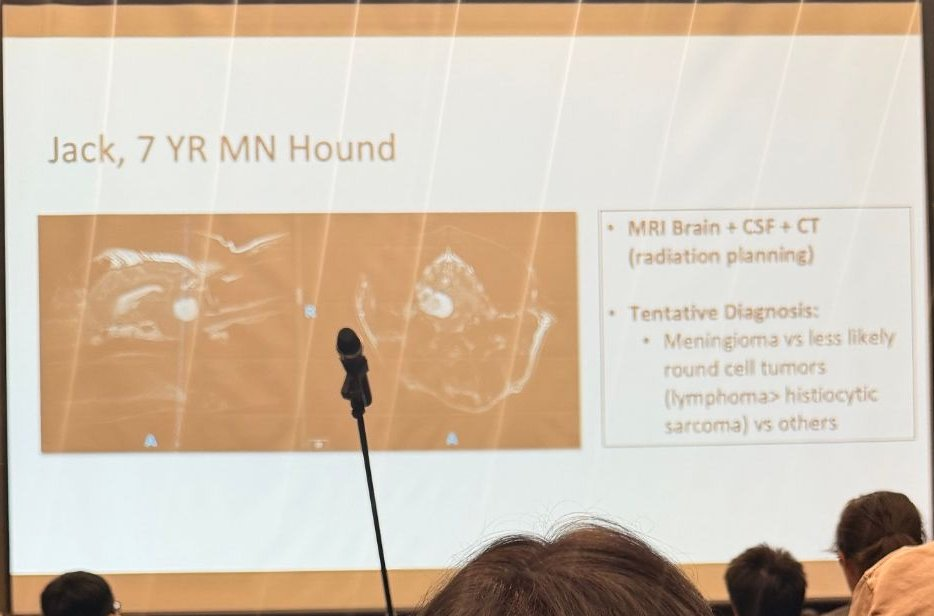
- 做了腦部 MRI ＋ 腦脊髓液（CSF）＋ CT（CT 是為了放射治療規劃）。
- 暫定診斷：腦膜瘤，其次是圓形細胞腫瘤（淋巴瘤 > 組織球肉瘤），或其他。
💡 治療與後續追蹤的投影片還沒拍到，之後補上。
5. 周邊前庭疾病：鑑別診斷與耳源性感染
▾📸 現場 鑑別診斷：急性 vs 慢性
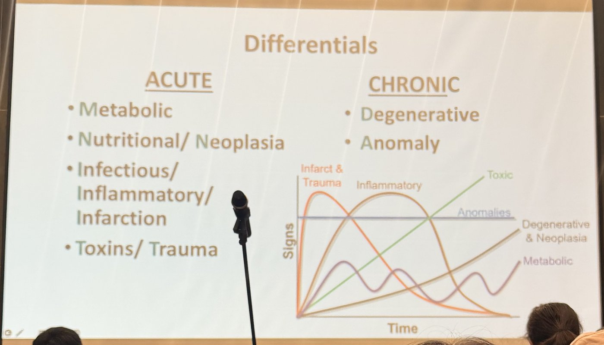
急性（ACUTE）
- 代謝（Metabolic）
- 營養／腫瘤
- 感染／發炎／梗塞
- 毒素／外傷
慢性（CHRONIC）
- 退化（Degenerative）
- 先天異常（Anomaly）
投影片右下是「症狀嚴重度 vs 時間」的病程曲線：
| 疾病類別 | 病程曲線 |
|---|---|
| 梗塞、外傷 | 一開始最嚴重，之後逐漸改善 |
| 發炎 | 上升一段時間後下降 |
| 中毒 | 持續上升（隨暴露累積） |
| 先天異常 | 平的，症狀穩定不變 |
| 退化、腫瘤 | 慢慢、持續惡化 |
| 代謝 | 起伏（waxing and waning） |
💡 用病史的「發病與進展」對照這張曲線，就能把鑑別診斷排出優先順序。例如 Jack 是慢慢惡化 → 腫瘤排第一。
📸 現場 周邊前庭疾病的鑑別診斷（DAMNIT）
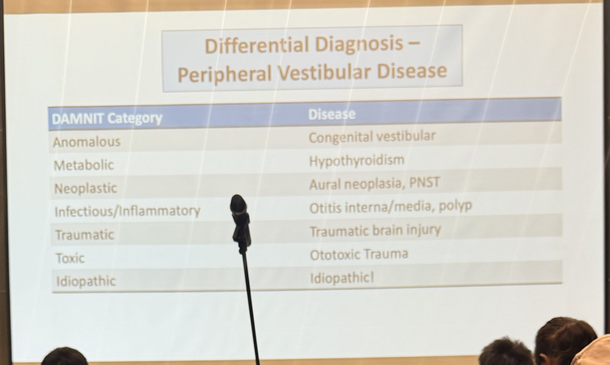
| DAMNIT 類別 | 疾病 |
|---|---|
| 先天異常 | 先天性前庭疾病 |
| 代謝 | 甲狀腺功能低下 |
| 腫瘤 | 耳部腫瘤、周邊神經鞘瘤（PNST） |
| 感染／發炎 | 內耳炎／中耳炎、息肉 |
| 外傷 | 創傷性腦傷 |
| 中毒 | 耳毒性藥物 |
| 特發性 | 特發性！ |
💡 息肉以貓為主（鼻咽息肉）；耳毒性常見的是 aminoglycoside、耳道內使用 chlorhexidine。
📸 現場 內耳炎／中耳炎（Otitis interna/media）
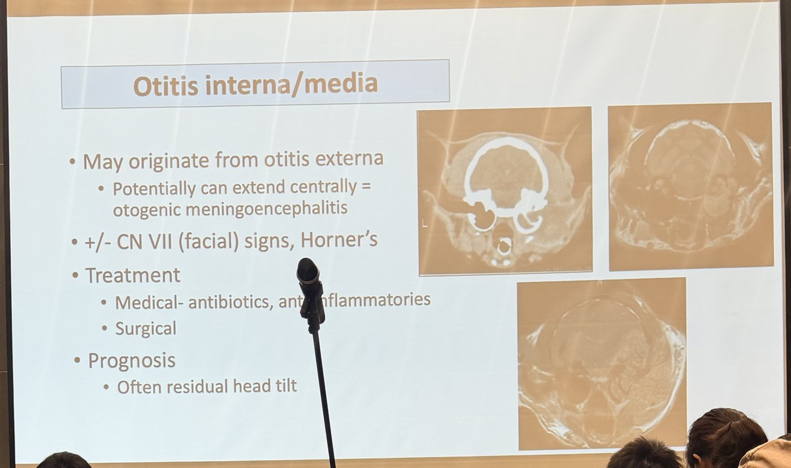
- 可能由外耳炎延伸而來。
- 可能再往中樞延伸，造成耳源性腦膜腦炎（otogenic meningoencephalitis）。
- 可能伴隨 CN VII（顏面神經）症狀、Horner（呼應第 7 節：節後纖維經過中耳）。
- 治療：內科（抗生素、抗發炎藥）；外科。
- 預後：常留下殘留的頭傾斜。
📸 現場 病例：法國鬥牛犬（耳源性腦膜炎）
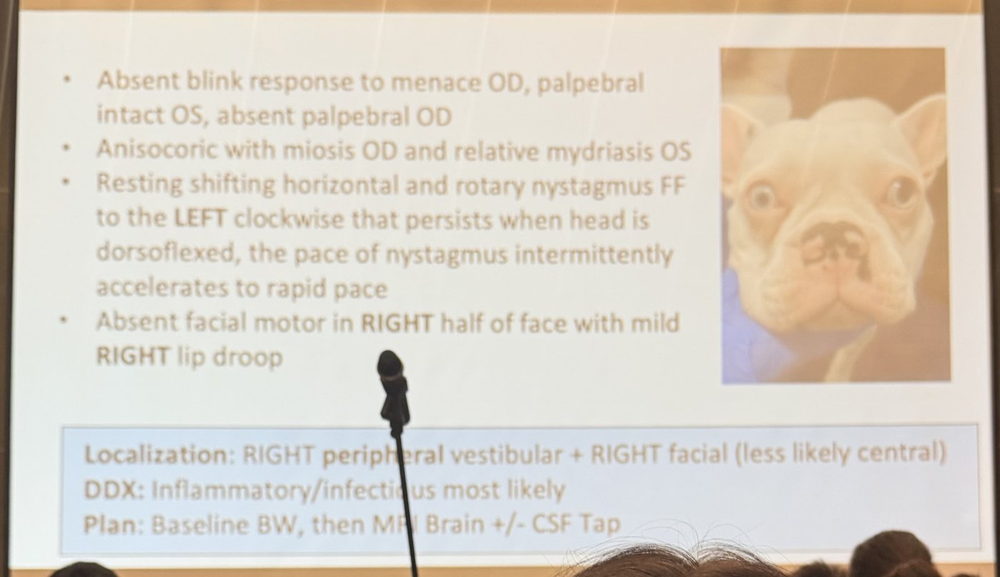
神經學檢查
- 右眼（OD）威嚇反應沒有眨眼；左眼（OS）眼瞼反射正常，右眼眼瞼反射消失。
- 瞳孔不等大：右眼縮小，左眼相對放大。
- 休息時有水平＋旋轉的眼球震顫，快相向左、順時針；頭往背側抬時仍存在，速度會間歇性突然加快。
- 右半臉沒有顏面運動，右側嘴唇輕微下垂。
MRI 結果
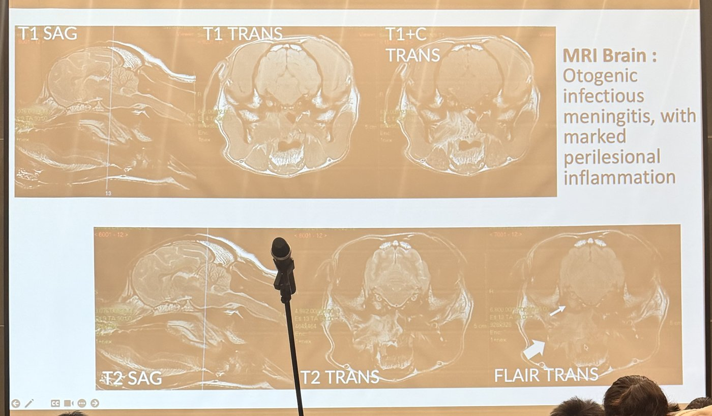
- 序列：T1 矢狀、T1 橫切、T1 顯影後橫切、T2 矢狀、T2 橫切、FLAIR 橫切（箭頭標出病灶）。
- 診斷：耳源性感染性腦膜炎，周圍組織有明顯發炎。
• 右眼不眨眼是顏面神經（CN VII）出問題，不是看不見：威嚇反應和眼瞼反射都需要 CN VII 閉眼。
• 右眼瞳孔縮小＝右側 Horner。
• 快相向左＝遠離右側病灶，符合右側周邊。
• CN VII ＋ Horner ＋ 前庭三者同側，指向右側中耳／內耳。
這隻狗神經學檢查看起來是周邊，MRI 卻已經延伸到腦膜，正好呼應第 2 節 Bongartz 的結論：周邊定位不能排除中樞。
📸 現場 法鬥病例：腦脊髓液
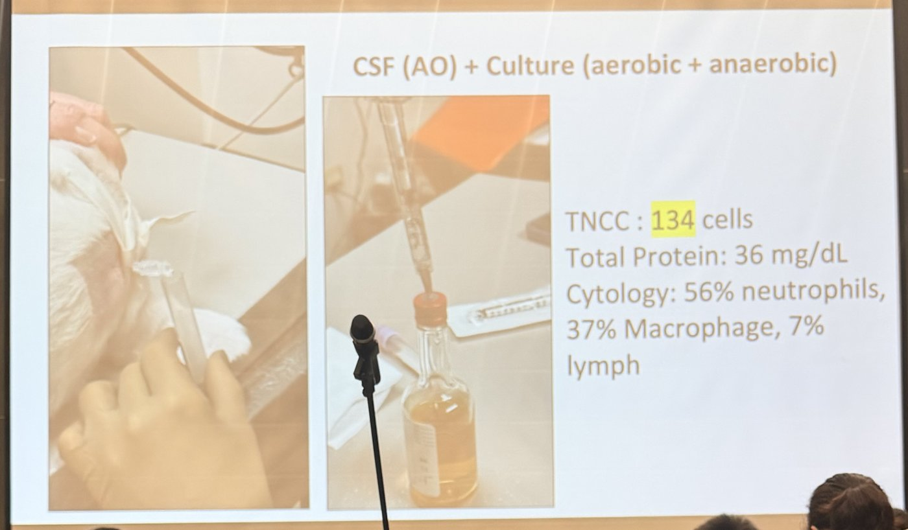
- 寰枕（AO）穿刺採腦脊髓液，並送需氧＋厭氧培養。
- 有核細胞數（TNCC）134；總蛋白 36 mg/dL。
- 細胞學：嗜中性球 56%、巨噬細胞 37%、淋巴球 7%。
💡 以嗜中性球為主的細胞增多，符合細菌性腦膜炎；但細菌性腦膜炎的 CSF 培養常是陰性，培養陰性不能排除。
📸 現場 研究：短頭犬的耳源性腦膜炎（30 隻）
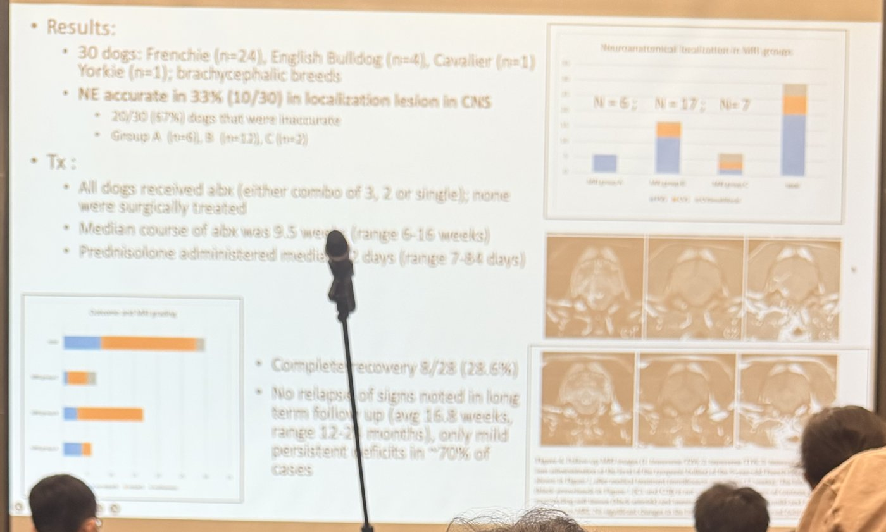
投影片只拍到結果頁，論文標題待補。
- 30 隻狗：法鬥 24、英國鬥牛犬 4、騎士查理王 1、約克夏 1，幾乎都是短頭品種。
- 神經學檢查能正確定位到中樞病灶的只有 33%（10/30）；67%（20/30）定位不準（A 組 6、B 組 12、C 組 2）。
- 治療：全部只用抗生素（3 種、2 種或單一），沒有一隻開刀；抗生素中位療程 9.5 週（6–16 週）；prednisolone 中位 12 天（7–84 天）。
- 預後：完全恢復 8/28（28.6%）；長期追蹤（12–24 個月）沒有復發；約 70% 留有輕微的持續缺損。
📸 現場 研究：法鬥的耳源性細菌性腦膜炎（Butterfield，Vet Record Open）
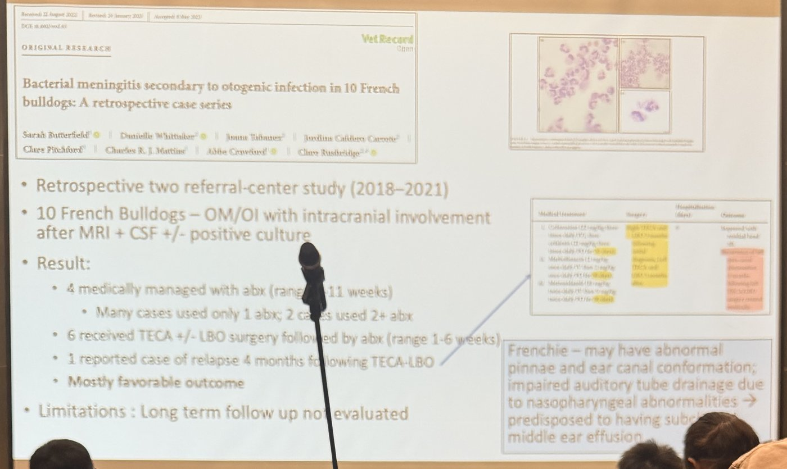
- Bacterial meningitis secondary to otogenic infection in 10 French bulldogs: A retrospective case series。兩家轉診中心，2018–2021。
- 10 隻法鬥，中耳／內耳炎合併顱內侵犯（MRI＋CSF ± 培養陽性）。
- 4 隻只用抗生素（最長 11 週），多數只用 1 種，2 隻用 2 種以上。
- 6 隻做 TECA ± LBO（全耳道切除 ± 外側鼓室泡截骨）後再用抗生素 1–6 週；1 隻術後 4 個月復發。
- 大多預後良好；限制：沒有長期追蹤。
📸 現場 病例 Kona：幼貓的中耳炎＋顱內膿瘍
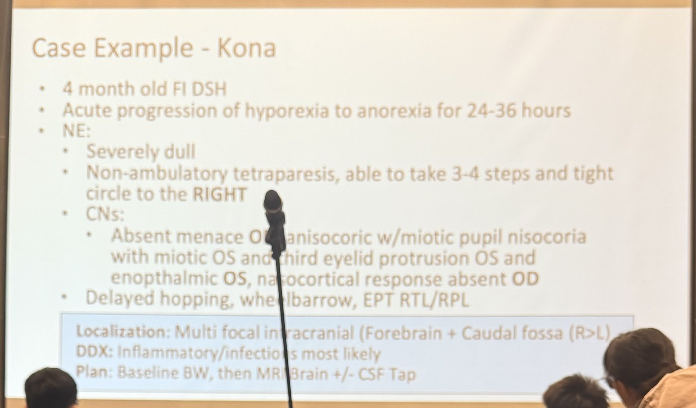
- 4 個月大、母的未絕育家貓（DSH）。食慾變差到完全不吃，24–36 小時內急性惡化。
- 神經學檢查：
- 嚴重沉鬱。
- 無法行走的四肢輕癱，只能走 3–4 步，並向右繞小圈。
- 腦神經：右眼威嚇反應消失；左眼瞳孔縮小、第三眼瞼突出、眼球內陷；右側鼻中隔刺激反應消失。
- 跳躍、手推車、伸肌姿勢推力反應延遲（右前、右後肢）。
- MRI 診斷：右側中耳／內耳炎＋顱內膿瘍。
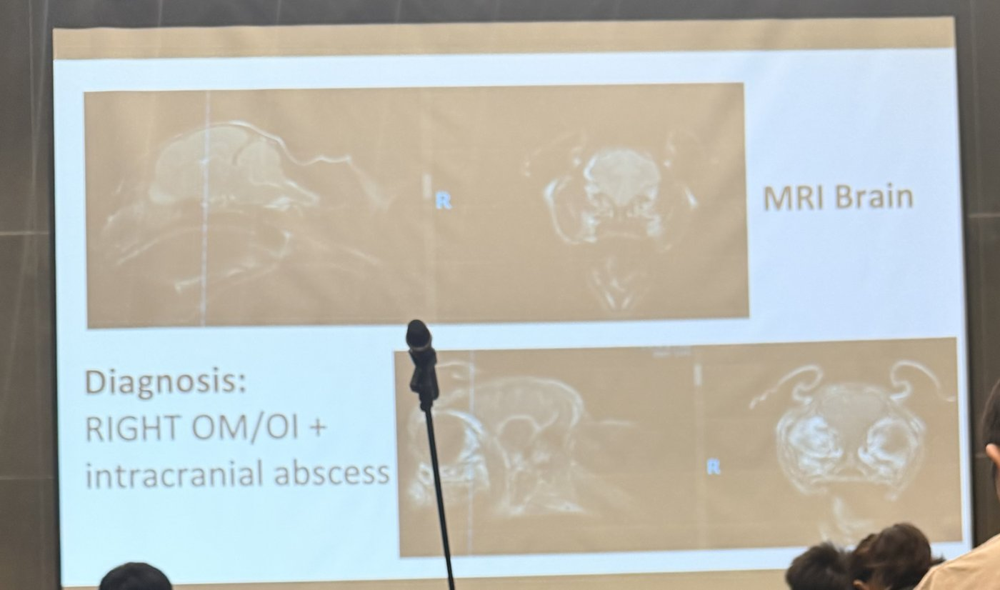
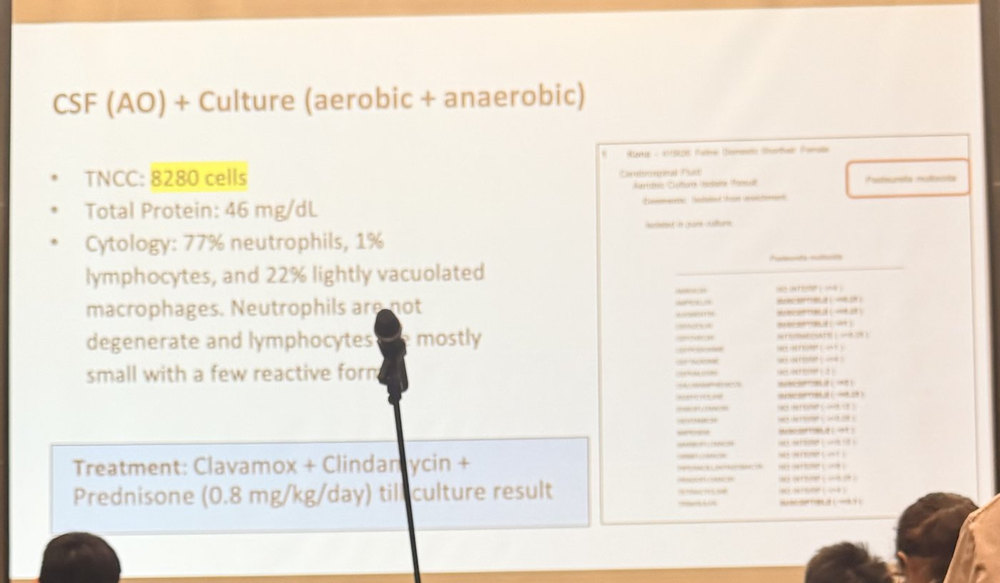
- 腦脊髓液：TNCC 8280；總蛋白 46 mg/dL；嗜中性球 77%（沒有退行性變化）、淋巴球 1%、輕度空泡化巨噬細胞 22%。
- 培養：Pasteurella multocida（純培養）。
- 治療：Clavamox ＋ clindamycin ＋ prednisone（0.8 mg/kg/天），等培養結果再調整。
💡 向右繞圈、右眼威嚇消失、右側鼻中隔反應消失，都符合右側前腦；但 Horner 的表現在左眼，和右側耳病灶不同側。照片上的文字是這樣寫，之後對照錄音確認。
📸 現場 研究：耳源性顱內感染，11 隻貓與 4 隻狗（Sturges 2006，JVIM）
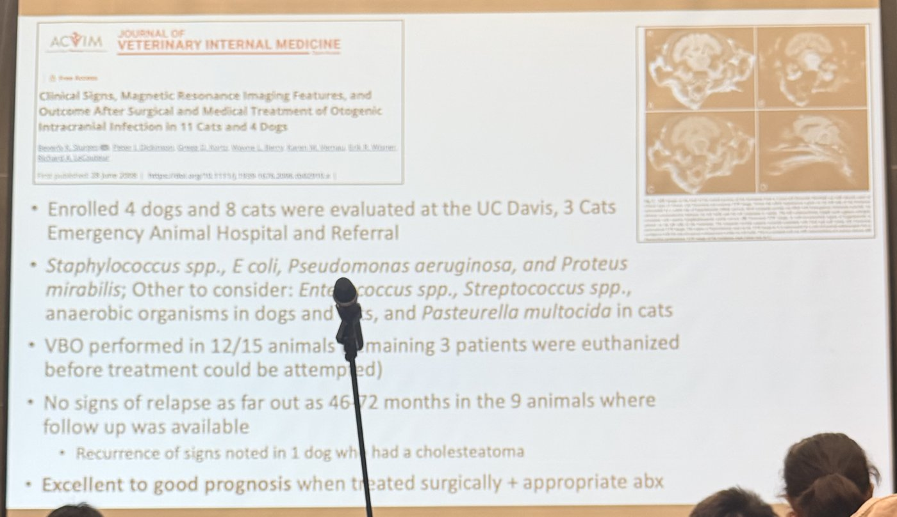
- Clinical Signs, Magnetic Resonance Imaging Features, and Outcome After Surgical and Medical Treatment of Otogenic Intracranial Infection in 11 Cats and 4 Dogs。
- UC Davis 4 隻狗、8 隻貓；另一家急診轉診醫院 3 隻貓。
- 菌種：Staphylococcus、E. coli、Pseudomonas aeruginosa、Proteus mirabilis；也要考慮 Enterococcus、Streptococcus、厭氧菌（犬貓），貓還有 Pasteurella multocida。
- 腹側鼓室泡截骨（VBO）：15 隻中 12 隻（另外 3 隻治療前安樂死）。
- 9 隻有追蹤的動物，46–72 個月都沒有復發；1 隻有膽脂瘤（cholesteatoma）的狗復發。
- 手術＋適當抗生素，預後良好到極佳。
📸 現場 研究：貓中耳／內耳炎的顱內併發症，19 隻（Moore，JFMS）
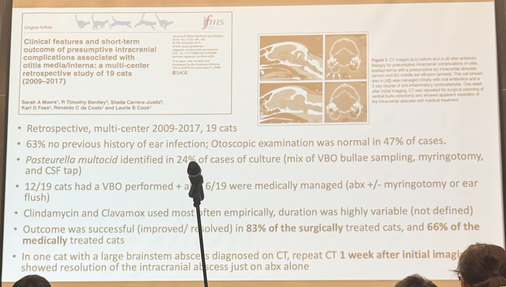
- 多中心回溯性研究，2009–2017，19 隻貓。
- 63% 以前沒有耳朵感染；47% 耳鏡檢查正常。
- 培養（鼓室泡、鼓膜切開、CSF）有 24% 長出 Pasteurella multocida。
- 12/19 做 VBO＋抗生素；6/19 內科治療（抗生素 ± 鼓膜切開或耳道沖洗）。
- 經驗性抗生素最常用 clindamycin 和 Clavamox；療程長短差異很大（沒有定論）。
- 成功（改善／緩解）：手術組 83%，內科組 66%。
- 1 隻貓 CT 有大的腦幹膿瘍，只用抗生素，1 週後複查 CT 膿瘍已消失。
📸 現場 抗生素選擇
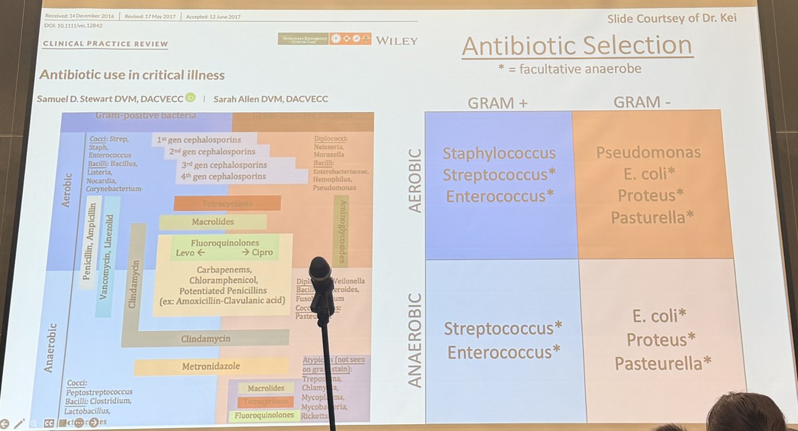
投影片由 Dr. Kei 提供；左側引用 Stewart & Allen, Antibiotic use in critical illness（JVECC 臨床回顧）的抗生素涵蓋範圍圖。
| 革蘭氏陽性 | 革蘭氏陰性 | |
|---|---|---|
| 需氧 | Staphylococcus、Streptococcus*、Enterococcus* | Pseudomonas、E. coli*、Proteus*、Pasteurella* |
| 厭氧 | Streptococcus*、Enterococcus* | E. coli*、Proteus*、Pasteurella* |
* ＝兼性厭氧菌
💡 這張表就是耳源性感染常見的菌。經驗性治療常用 amoxicillin-clavulanate ＋ clindamycin（如 Kona），涵蓋革蘭氏陽性、多數陰性和厭氧菌；但 Pseudomonas 不在涵蓋範圍內，要靠培養結果調整（如 fluoroquinolone）。
📸 現場 總結：中耳／內耳炎合併顱內感染
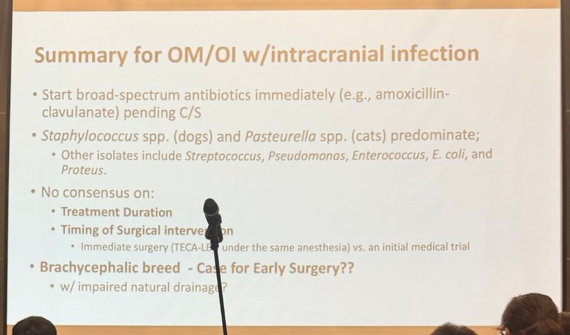
- 立刻開始廣效抗生素（例如 amoxicillin-clavulanate），等培養與藥敏結果再調整。
- 狗以 Staphylococcus 為主，貓以 Pasteurella 為主；其他還有 Streptococcus、Pseudomonas、Enterococcus、E. coli、Proteus。
- 目前沒有共識：
- 療程要多長。
- 手術時機：同一次麻醉立即做 TECA-LBO，還是先試內科治療。
- 短頭品種：是否應該早點開刀？因為自然引流本來就差。
📸 現場 耳毒性（Ototoxicity）
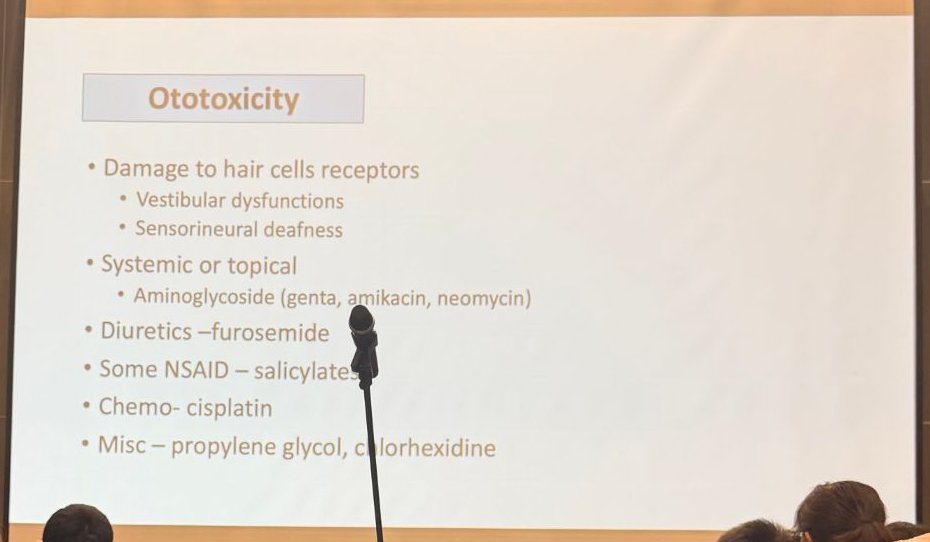
- 傷害內耳的毛細胞受器，造成前庭功能異常、感覺神經性耳聾。
- 全身或局部給藥都可能：
- Aminoglycoside（gentamicin、amikacin、neomycin）
- 利尿劑：furosemide
- 部分 NSAID：水楊酸類（salicylates）
- 化療：cisplatin
- 其他：propylene glycol、chlorhexidine
💡 鼓膜破裂時，耳道內用含 aminoglycoside 或 chlorhexidine 的耳藥、耳道清潔液，風險最高。洗耳前先確認鼓膜。
📸 現場 特發性前庭疾病（Idiopathic Vestibular Disease）
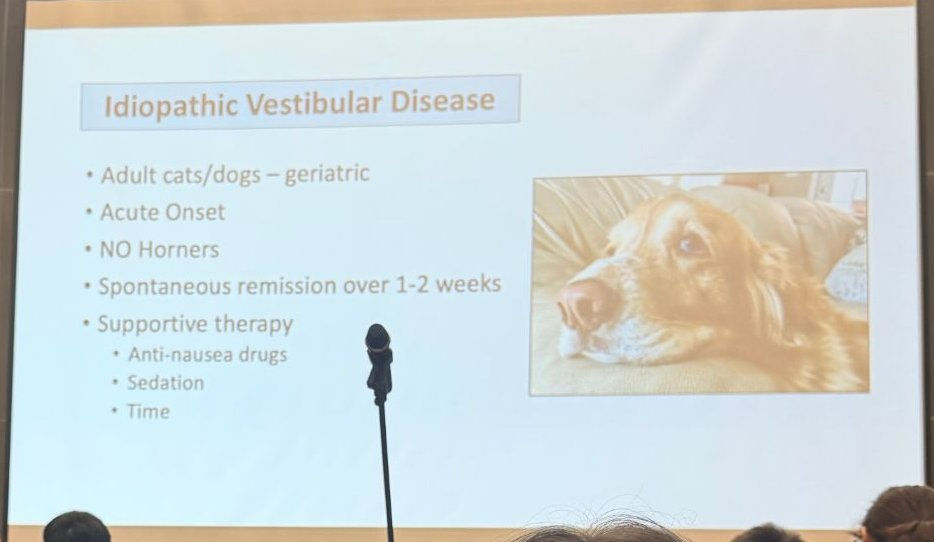
- 成年貓狗，老年為主。
- 急性發作。
- 沒有 Horner。
- 1–2 週內自行緩解。
- 支持療法：止吐藥、鎮靜、時間。
💡 有 Horner 就要往中耳炎等其他病因找，不要直接歸為特發性。
📸 現場 研究：狗周邊前庭疾病的臨床、MRI 與預後（Orlandi 2020，BMC Vet Res）
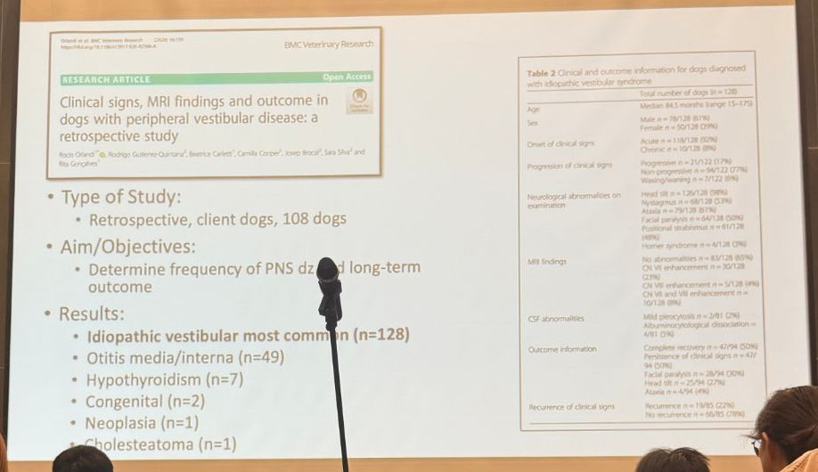
- Clinical signs, MRI findings and outcome in dogs with peripheral vestibular disease: a retrospective study。回溯性，客戶的狗（投影片寫 108 隻，但特發性一組就有 128 隻，總數待確認）。
- 目的：周邊前庭疾病各病因的比例與長期預後。
- 病因：特發性最多（128）、中耳／內耳炎 49、甲狀腺功能低下 7、先天 2、腫瘤 1、膽脂瘤 1。
特發性前庭症候群（n＝128，Table 2）
| 項目 | 結果 |
|---|---|
| 年齡 | 中位數 84.5 個月（15–175） |
| 性別 | 公 61%、母 39% |
| 發病 | 急性 92%、慢性 8% |
| 病程 | 不進展 77%、進展 17%、起伏 6% |
| 神經學檢查 | 頭傾斜 98%、運動失調 61%、眼球震顫 53%、顏面神經麻痺 50%、姿勢性斜視 48%、Horner 3% |
| MRI | 正常 65%；CN VII 顯影 23%、CN VIII 顯影 4%、兩者都顯影 8% |
| 腦脊髓液 | 輕度細胞增多 2%、蛋白細胞分離 5% |
| 預後 | 完全恢復 50%；殘留症狀 50%（顏面麻痺 30%、頭傾斜 27%、運動失調 4%） |
| 復發 | 22% |
💡 和投影片「特發性」的教科書印象相比，這篇有兩點值得注意：一半的狗合併顏面神經麻痺，而且一半會留下殘留症狀、約 1/5 復發。
📸 現場 甲狀腺功能低下（Hypothyroidism）
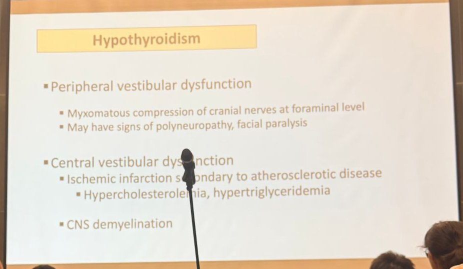
- 周邊前庭異常：黏液性物質在腦神經出顱的孔洞壓迫神經；可能合併多發性神經病、顏面神經麻痺。
- 中樞前庭異常：
- 動脈粥狀硬化造成的缺血性梗塞（高膽固醇、高三酸甘油酯）。
- 中樞神經脫髓鞘。
💡 前庭＋顏面神經麻痺的狗，記得驗甲狀腺（TT4、fT4、TSH）。
6. 中樞前庭疾病：診斷流程與病因
▾📸 現場 中樞前庭異常的診斷流程
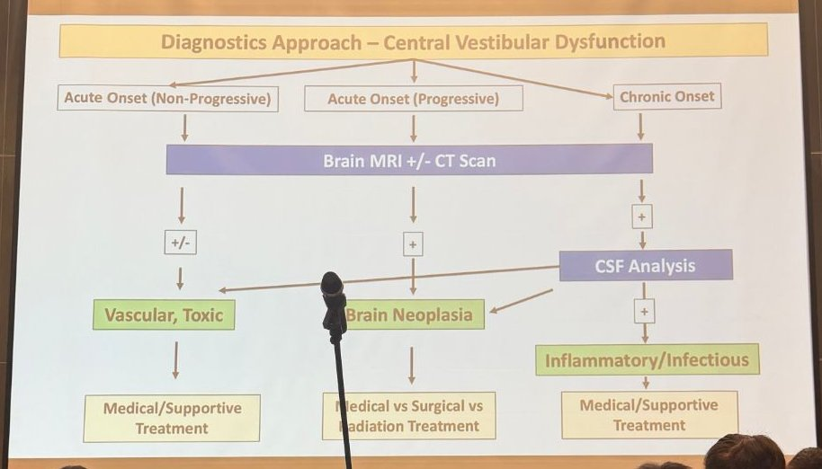
| 發病型態 | 檢查 | 最可能 | 治療 |
|---|---|---|---|
| 急性、不進展 | 腦部 MRI ± CT；± CSF | 血管性、中毒 | 內科／支持療法 |
| 急性、進展 | 腦部 MRI ± CT ＋ CSF | 腦腫瘤 | 內科 vs 手術 vs 放射治療 |
| 慢性 | 腦部 MRI ± CT ＋ CSF | 發炎／感染 | 內科／支持療法 |
投影片上 CSF 的箭頭也指向血管性和腦腫瘤：CSF 對三類都有幫助（排除發炎）。
💡 這張圖的邏輯就是第 5 節的病程曲線：急性不進展像梗塞，持續進展像腫瘤。
📸 現場 發炎性疾病（Inflammatory Disease）
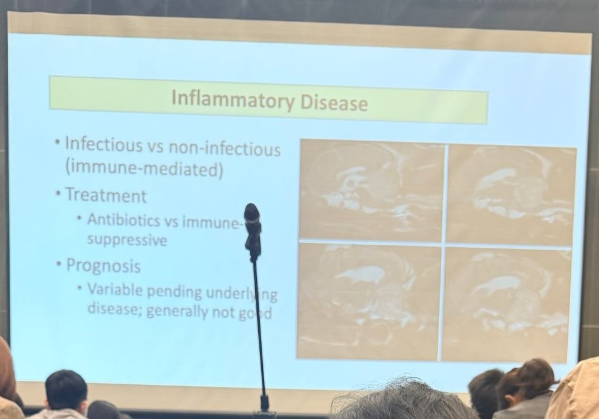
- 感染性 vs 非感染性（免疫媒介）。
- 治療：抗生素 vs 免疫抑制。
- 預後：依病因而定，通常不太好。
💡 非感染性就是 MUO（原因不明的腦膜腦炎，包括 GME、NME 等），確診前要先排除感染，才能放心用免疫抑制。
📸 現場 硫胺素（維生素 B1）缺乏
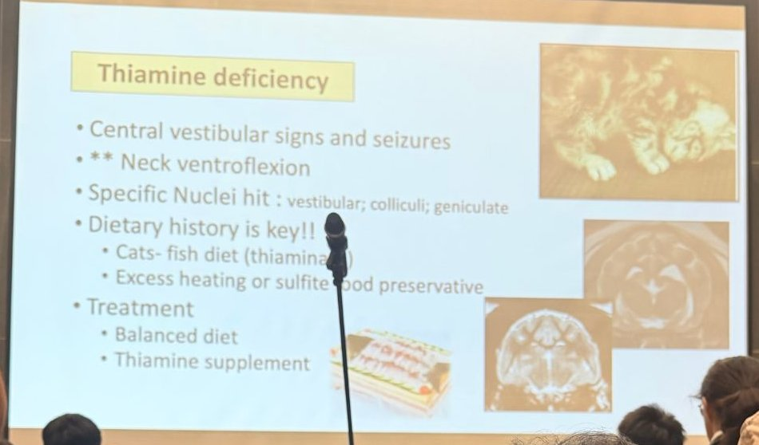
- 中樞前庭症狀與癲癇。
- 頸部腹屈（neck ventroflexion）。
- 侵犯特定神經核：前庭核、丘（colliculi）、膝狀體（geniculate）。
- 飲食史是關鍵！
- 貓吃生魚（含硫胺素酶）。
- 食物過度加熱，或用亞硫酸鹽防腐劑。
- 治療：均衡飲食、補充硫胺素。
💡 MRI 的對稱性病灶是特徵。懷疑時先打硫胺素，不用等確診：便宜、安全，反應快也幫助診斷。
7. Horner 路徑（Horner's Pathway）
▾📸 現場 眼睛的交感神經路徑
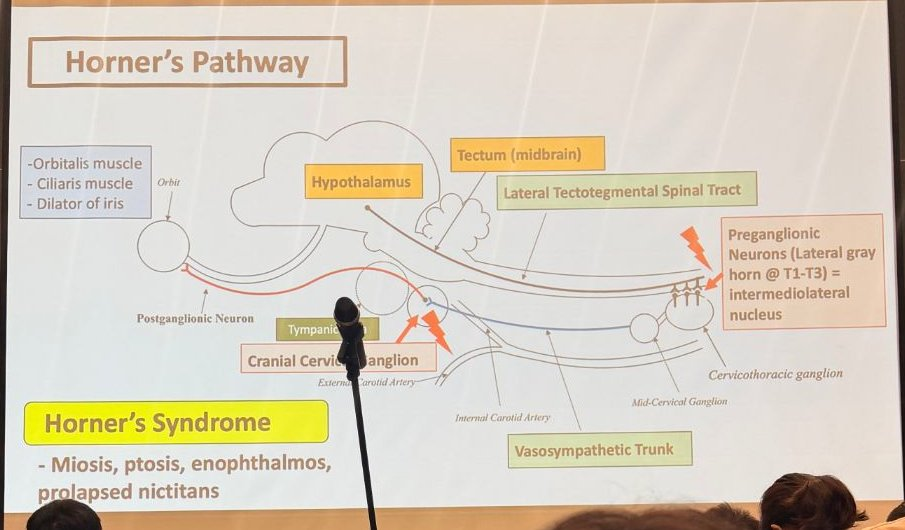
路徑（從腦到眼）
| 段 | 投影片上的結構 | 說明 |
|---|---|---|
| 第一段（中樞，UMN） | 下視丘（hypothalamus）→ 中腦頂蓋（tectum, midbrain）→ 外側頂蓋被蓋脊髓徑（lateral tectotegmental spinal tract） | 沿腦幹、頸髓往下 |
| 第二段（節前） | 節前神經元：T1–T3 的外側灰柱＝中間外側核（intermediolateral nucleus）→ 經頸胸神經節（cervicothoracic ganglion）、中頸神經節（mid-cervical ganglion）→ 迷走交感幹（vagosympathetic trunk） | 穿過兩個神經節但不在那裡換神經元；沿頸部和迷走神經同行 |
| 第三段（節後） | 前頸神經節（cranial cervical ganglion）→ 節後神經元經鼓室泡（tympanic bulla）旁 → 眼眶 | 與內頸動脈同行，經過中耳 |
| 作用器官 | 眼眶肌（orbitalis）、睫狀肌（ciliaris）、虹膜擴大肌（dilator of iris） | 瞳孔放大、眼球前推、眼瞼張開 |
Horner 症候群
- 瞳孔縮小（miosis）、眼瞼下垂（ptosis）、眼球內陷（enophthalmos）、第三眼瞼突出（prolapsed nictitans）。
💡 定位的線索：
- 中樞（第一段）：同時有腦幹或頸髓症狀（意識改變、輕癱、本體感覺缺損）。
- 節前（第二段）：T1–T3 脊髓或神經根病灶（同時有前肢 LMN 症狀、同側皮膚軀幹肌反射消失）、臂神經叢撕脫、前縱膈或頸部腫塊、頸部外傷（如勒頸、頸靜脈採血）。
- 節後（第三段）：中耳炎、耳道沖洗後、眼眶後病灶。
- 藥物試驗：稀釋 phenylephrine 點眼，節後病灶因去神經過敏而在約 20 分鐘內瞳孔放大，節前或中樞則較慢或不放大。
8. 定位速查表
▾💡 整理者依本場投影片整理：
| 看到的組合 | 定位 |
|---|---|
| 頭傾斜＋眼球震顫，本體感覺、肌力、意識都正常 | 周邊前庭（頭歪的那側） |
| 同上＋同側 Horner（±CN VII 麻痺） | 周邊前庭，中耳／內耳（同側） |
| 頭傾斜＋同側本體感覺缺損或輕癱、沉鬱 | 中樞前庭（腦幹前庭核，頭歪的那側） |
| 頭傾斜＋對側本體感覺缺損、步幅過大、意向性震顫 | 矛盾性前庭：病灶在本體感覺缺損那側的小葉小結葉／後小腦腳 |
| 垂直眼球震顫、眼球震顫方向隨頭位改變 | 中樞 |
| 無法行走；休息時眼球震顫慢或沒有 | 偏向中樞（Troxel 2005） |
| 遮眼＋筆燈後眼球震顫變快、變明顯 | 支持周邊（沒變化不能排除周邊） |
| 前庭症狀持續惡化 | 中樞、腫瘤優先（如病例 Jack） |
| 同側前庭＋CN VII＋Horner | 同側中耳／內耳（如法鬥病例） |
| 老年、急性、沒有 Horner、很快改善 | 特發性前庭疾病 |
| 貓吃生魚、頸部腹屈、MRI 對稱病灶 | 硫胺素缺乏 |